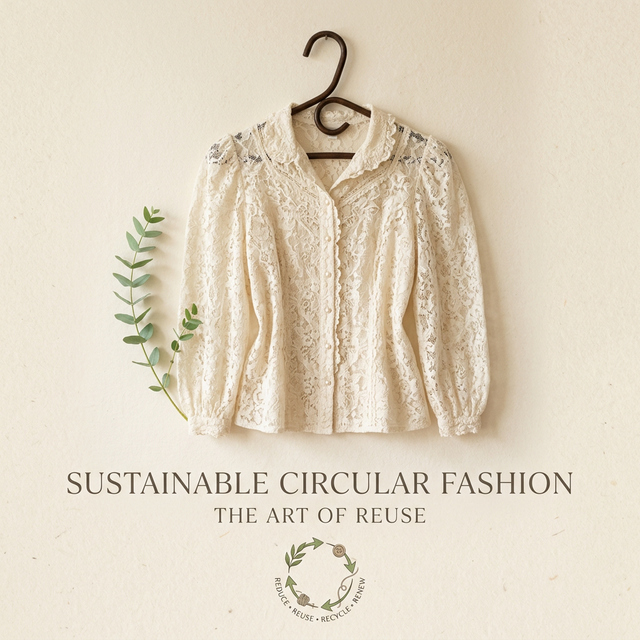

O Guia Prático da Consignação: Como vender roupas em nosso brechó Savassi
Reflexões — Brechó Outra VezSabe aquela blusa belíssima, de uma marca incrível, mas que está parada no seu guarda-roupa há meses com a etiqueta? Ou aquele vestido que você usou em uma única festa e agora não faz mais sentido no seu estilo? Chegou a hora de transformar isso em crédito ou dinheiro na sua conta. A consignação de roupas femininas usadas é um dos pilares do Brechó Outra Vez e a forma mais inteligente de organizar seu armário e consumir de forma mais sustentável.
Vender roupas em brechó não exige malabarismos, mas existem regras cruciais de etiqueta (e de higiene!). O primeiro passo é o filtro emocional: “Eu usaria isso hoje?”. Se a resposta for um claro 'não', desapegue. Contudo, nossa curadoria em BH avalia cada peça sob a ótica da próxima dona. Não aceitamos tudo; buscamos qualidade. Afinal, a peça precisa estar pronta para protagonizar uma nova história.
A preparação da peça é fundamental. Antes de agendar seu horário pelo telefone, verifique costuras, zíperes e botões. Um botão caindo pode fazer a diferença entre uma peça aceita ou rapidamente devolvida. Depois, a peça precisa estar rigorosamente limpa e cheirosa. Lavar as roupas e mantê-las engomadas eleva o valor de mercado e a atratividade imediata da mesma ao chegar no brechó. A primeira impressão é, como em tudo na vida, a que fica.

Muitas pessoas nos perguntam sobre marcas. “Só aceitam roupas de grife internacional?”. Não! Aceitamos Zara, Farm, Animale, Osklen, Arezzo e claro, marcas mais conceituais ou exclusivas. Aceitamos todos os sapatos independentemente da marca, desde que em bom estado. Nós avaliamos a integridade, o material (lembram da importância do tecido?) e a atualidade da modelagem. A magia da moda circular está em misturar marcas, sem focar só nas etiquetas, mas sim no estilo refinado e inteligente.
O funcionamento da nossa consignação na Savassi é transparente. Você agenda sua avaliação, nós verificamos as peças e montamos uma sugestão de precificação junta com você. A divisão dos lucros é combinada na ocasião e a peça ganha vida na nossa loja por até 90 dias. É uma economia compartilhada pura e direta. Desapegar não é perder, é abrir espaço mental e físico para novas experiências e novos achados. O seu desapego será, garantidamente, o novo look favorito de alguém.
Tem peças incríveis para desapegar ou quer renovar o closet?
Agendar visita: (31) 8403-2616